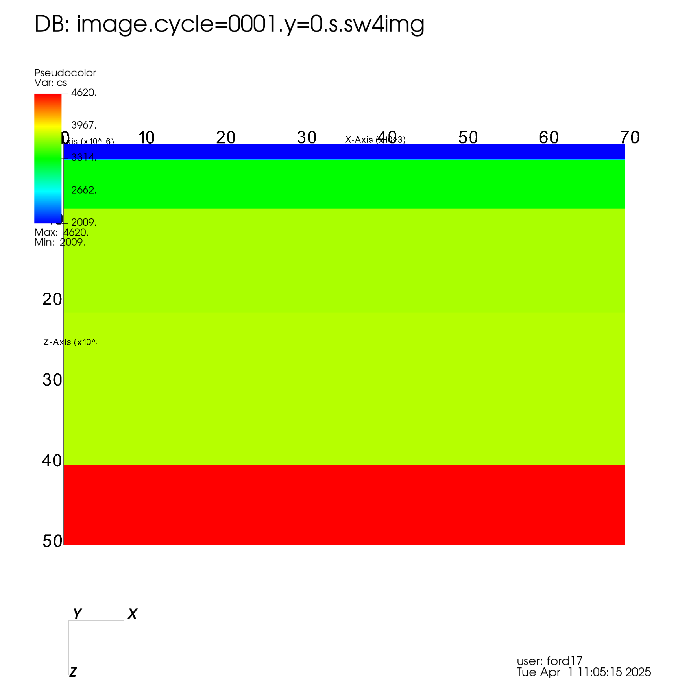

Chandan asked, “Can you run MZZ, MXX, MYY seismograms for a layered medium in your SW4 and send me the output with the model?”
We obtained SW4v3.0 from GitHub and compiled on macos with MPICH using the following make.inc file:
proj = yes
# homebrew version of proj is fine
SW4ROOT = /opt/homebrew
fftw = yes
# homebrew version uses openmpi so installed fftw for mpich
FFTWHOME = /Users/ford17/Applications/fftw-3.3.10
FC = mpif90
CXX = mpicxx
# need Accelerate for blas on macos
EXTRA_LINK_FLAGS = -framework Accelerate -L/opt/homebrew/lib/gcc/current -lgfortran
2 Method
The requirements are:
Station at (x,y,z) = (60, 0, 0)
Source at (x,y,z) = (10, 0, 10)
WUS model
PPW for 5 Hz
Dirac (delta) source
So we create an SW4 input files for each source. Below is the input file for mxx.sw4in:
Note that we could have used refinement at the lowest layer for a more efficient calculation.
And to calculate the results we could use the command:
> mpirun -np 16 sw4 mxx.sw4in
In practice we used many more processors available on ruby from LC with a slurm script, runruby.sw4run:
#!/bin/tcsh
#SBATCH -N 50
#SBATCH -J run
#SBATCH -t 500
#SBATCH -p pbatch
#SBATCH --license=lustre1
#SBATCH -A gmp
#SBATCH -o run.sw4out
#SBATCH -e run.sw4err
# Max: 1440 minutes (24 hours) on 520 nodes
# 50 nodes took 15 minutes per run (9 runs = 135 minutes)
# Set CPUS/nodes for RUBY (limit 520 nodes for 24 hours)
@ CPUSPERNODE = 56
# Compute number of CPUs
@ NCPUS = ( $SLURM_JOB_NUM_NODES * $CPUSPERNODE )
srun -n$NCPUS /usr/workspace/ford17/sw4/optimize_ruby_mp/sw4 mxx.sw4in
srun -n$NCPUS /usr/workspace/ford17/sw4/optimize_ruby_mp/sw4 myy.sw4in
srun -n$NCPUS /usr/workspace/ford17/sw4/optimize_ruby_mp/sw4 mzz.sw4in
srun -n$NCPUS /usr/workspace/ford17/sw4/optimize_ruby_mp/sw4 mxy.sw4in
srun -n$NCPUS /usr/workspace/ford17/sw4/optimize_ruby_mp/sw4 mxz.sw4in
srun -n$NCPUS /usr/workspace/ford17/sw4/optimize_ruby_mp/sw4 myz.sw4in
srun -n$NCPUS /usr/workspace/ford17/sw4/optimize_ruby_mp/sw4 fx.sw4in
srun -n$NCPUS /usr/workspace/ford17/sw4/optimize_ruby_mp/sw4 fy.sw4in
srun -n$NCPUS /usr/workspace/ford17/sw4/optimize_ruby_mp/sw4 fz.sw4in
And then we execute the script with:
> sbatch runruby.sw4run
Our goal for an accurate calculation is to have a minimum points per wavelength (PPW) of between 6 and 10. The PPW is related to the smallest wave velocity \(v\) [m/s] divided by the grid spacing \(h\) [m] divided by the maximum frequency represented \(f\) [1/s]. For the grid used here (\(v = 2008.9\) m/s, \(h = 50\) m) the points per wavelength for a 5 Hz maximum frequency is:
\[
\text{PPW} = v / h / f = 2008.9 / 50 / 5 \approxeq 8
\]
3 Results
The shear wave velocity model is shown in Figure 1.
Code
%%script bashvisit -cli -nowin -quiet << FIN &>/dev/null#OpenDatabase("/Users/ford17/Development/sw4-for-chandan/SW4/mxx.dir/image.cycle=0001.y=10000.s.sw4img")AddPlot("Pseudocolor", "cs")DrawPlots()## View3DAtts = View3DAttributes()View3DAtts = GetView3D() # This is better since it gets the window optimized attributesView3DAtts.viewNormal = (0, 1, 0)View3DAtts.viewUp = (0, 0, -1)SetView3D(View3DAtts)## s.screenCapture = 0 SaveWindowAtts = SaveWindowAttributes()# SaveWindowAtts.outputToCurrentDirectory = 0 # required# SaveWindowAtts.outputDirectory = "/Users/Ford17/Development/sw4-for-chandan/images"SaveWindowAtts.outputToCurrentDirectory =1SaveWindowAtts.fileName ="fig-model"SaveWindowAtts.family =0# do not append numberSaveWindowAtts.format= SaveWindowAtts.POSTSCRIPT # BMP, JPEG, PNG, POSTSCRIPT, PPM, RGB, STL, TIFF, ULTRA, VTKSaveWindowAtts.width =2048SaveWindowAtts.height =2048SetSaveWindowAttributes(SaveWindowAtts)SaveWindow()#quit()FINgmt psconvert fig-model.ps -A -Tfg/bin/rm visitlog.py

Figure 1: Shear wave velocity model plotted with VisIt
Calculated velocities bandpassed between 20 s and 5 Hz are shown in Figure 2.
Figure 3: Calculated displacements using CPS low passed at 5 Hz plotted with ObsPy.
We also calculated the Green’s functions using the strains calculation from SW4. This is obtained via reciprocity where strains at the source location are calculated due to a unit force at the surface. Such an input file for the vertical component can be calculated using the following input file:
![]()